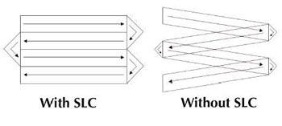
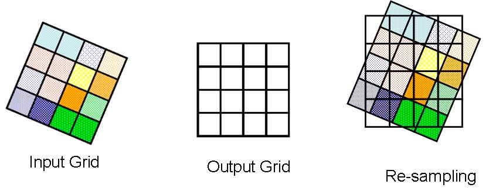
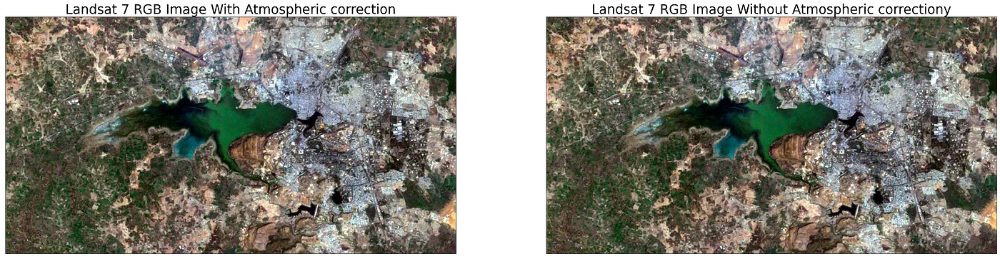
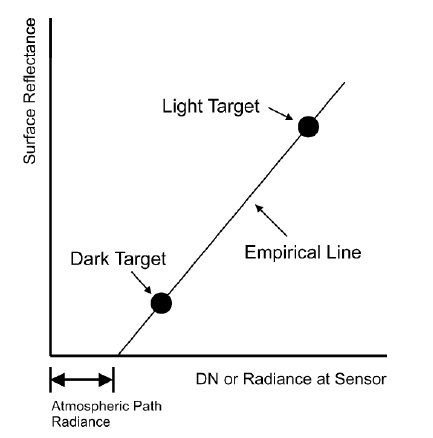
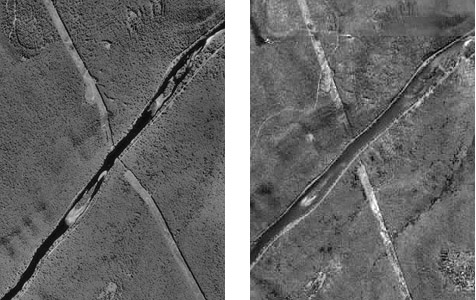
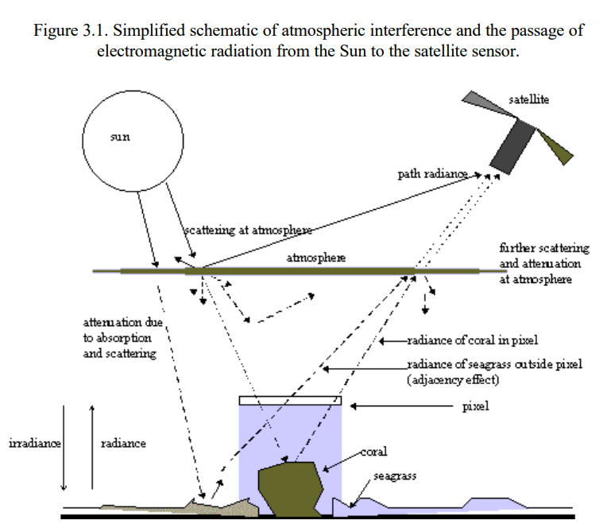
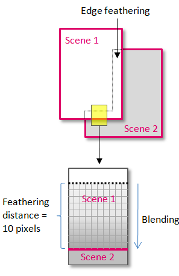
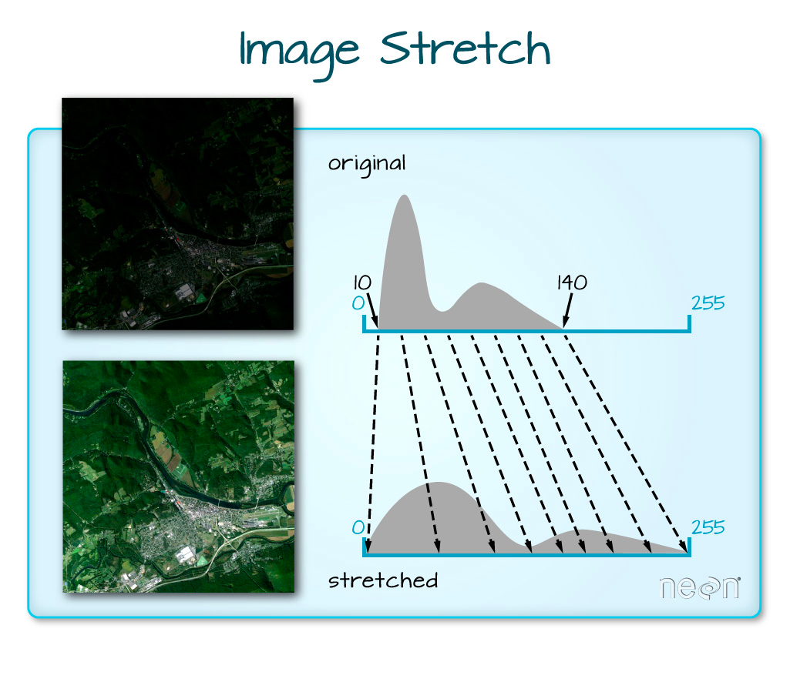

3 Remote sensing data
3.1 Summary
This week we will learn about ‘corrections’ and ‘data joining annd enhancement’.
3.1.1 Corrections
Sometimes images obtained by remote sensing may contain defects due to sensor, atmosphere, terrain, so pre-processing is required.
A typical example is when Landsat7’s scan line corrector fails. It moves in a zigzag motion and the corrector normalizes the image. However, it is difficult to use with a method developed for estimating gaps, called gap filling.

Source:USGS
Geometric correction
Collecting remotely sensed data can cause distortion due to viewing angle, topography (slope rather than flat areas), wind, and Earth’s rotation.
Thus, using geographic maps, other images, and GPS data from handheld devices, ground control points are identified to match known points in the image to a reference data set.
The model with the lowest RMSE is the best fit. Jensen sets the RMSE value to 0.5. You can usually add more GCPs to reduce the RMSE.
This may shift the data slightly, so the final raster needs to be resampled. Resampling methods include nearest neighbor, linear, cubic, and cubic spline.

Source:Richard Treves
Atmospheric correction
Atmospheric correction is a process used in remote sensing to correct for the effects of the Earth’s atmosphere on the remotely sensed data. The Earth’s atmosphere is composed of various gases, particles, and water vapor, which can absorb, scatter, and reflect the electromagnetic radiation from the sun or the Earth’s surface. These atmospheric effects can distort or obscure the signals received by remote sensors, leading to errors in the interpretation of the data.
There are various methods for atmospheric correction, including the use of empirical models, such as the Dark Target or Deep Blue algorithms, and physical models, such as the MODTRAN or 6S models. The choice of method depends on the specific application, the sensor characteristics, and the atmospheric conditions at the time of data acquisition.

Source:USGS
Empirical line correction
Empirical correction in remote sensing refers to a type of atmospheric correction that is based on statistical relationships between the remotely sensed data and ground truth measurements.
This methods are particularly useful for sensors that lack the spectral resolution or radiometric accuracy to accurately model the atmospheric effects using physical models.

Source:Source: David P. Groeneveld
Ortho-rectification correction
In satellite images, distortion occurs due to the shading effect in images taken of mountain areas with severe topography. In consideration of this distortion, all points in the data are corrected so that they have the same shape as seen from a vertical position like a map. It is called -rectification correction.
In order to generate orthocorrection, the image to be orthocorrected, satellite image, aerial photograph, etc., digital elevation model (DEM) of the image area to be corrected, ground control point (GCP), and auxiliary data of the image are required.
Ortho-rectification correction can be performed using various techniques, including photogrammetry, lidar, and radar.

Orthorectification creates a final product whereby each pixel in the image is depicted as if it were collected from directly overhead or as close to this as possible. In the graphic above, you can see a path through the forest going from the northwest to the southeast. On the left is the original image, and on the right is the orthorectified image. In the orthorectified version, you can see that the path is now nearly straight after the influence of topography has been removed from the image. (Graphic Credit: David DiBiase, Penn State University). Source:Apollo Mapping, 2016
Radiometric calibration
This content mainly applies to optical sensor images, and image data acquisition from satellites is when light incident from the sun is reflected by an object on the surface of the earth and then detected by the observation sensor of the satellite, and sunlight is scattered and absorbed in the process of passing through the atmosphere. , is reflected, which means preprocessing to correct it.
The influence of the atmosphere weakens the intensity of sunlight incident on the sensor, and consequently affects the brightness of image data. In order to correct this, correction is performed using an atmospheric model, which is performed by an atmospheric model created by actual observations or calculations.
The atmospheric model can estimate the amount of scattering, absorption, and reflection corresponding to each wavelength and the intensity of solar incident light by inserting factors such as the altitude angle of the sun and meteorological factors at the time of observation. According to this algorithm, the brightness of the original image data value can be corrected.

Source:Newcastle Univesrity
3.1.2 Data joining and enhancement
Feathering
Feathering helps to eliminate these visible seams or transitions by blending the overlapping areas of adjacent images or data sets together. The goal of feathering is to create a seamless composite image that appears as if it was collected as a single image or data set.
According to Jensen
Within the overlap area an representative sample is taken
A histogram is extracted from the base image
It is then applied to image to using a histogram matching algorithm
This gives similar brightness values of the two images
Next feathering is conducted

Source:Harris Geospatial
Image enhancement
There are several methods to enhance the images. Representatively, we can enhance it through contrast enhancement. The goal of contrast enhancement is to increase the contrast between different features in the image, making it easier to distinguish between them and extract useful information. For example, we can use stretching. This technique involves expanding the range of pixel values in an image to increase the contrast between dark and light areas. This can help to enhance the visibility of subtle features in the image.

3.2 Applications
3.3 Personal Reflection
In Korea, I took the exam when I obtained a license related to surveying and geospatial information. In this test, the problem of image correction was frequently presented in the remote sensing subject. Thanks to this, I was aware of the importance of correction in performing remote sensing. In fact, after joining the company, I felt that it was more important to obtain reliable data by correcting it later than collecting satellite data. With this week’s class, I once again thought about the importance of image correction. Before this week’s class, I knew about the basic principles, but I was able to learn exactly why each correction is done and how it is done.